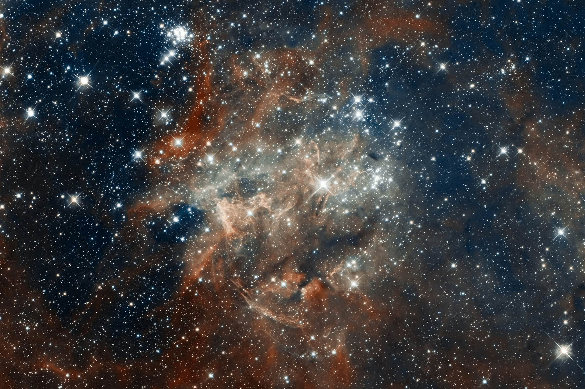
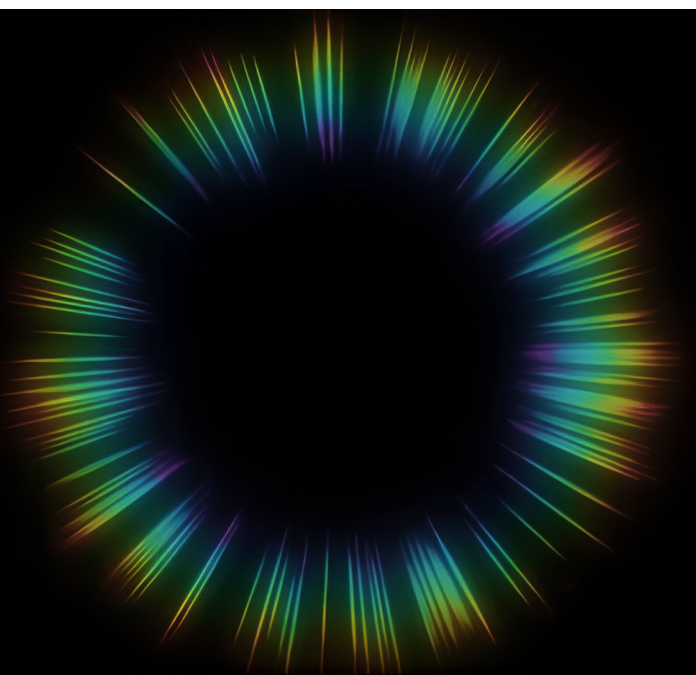
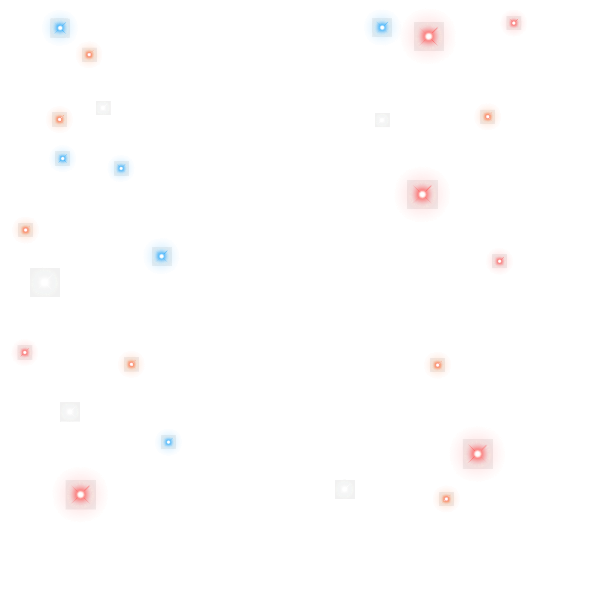
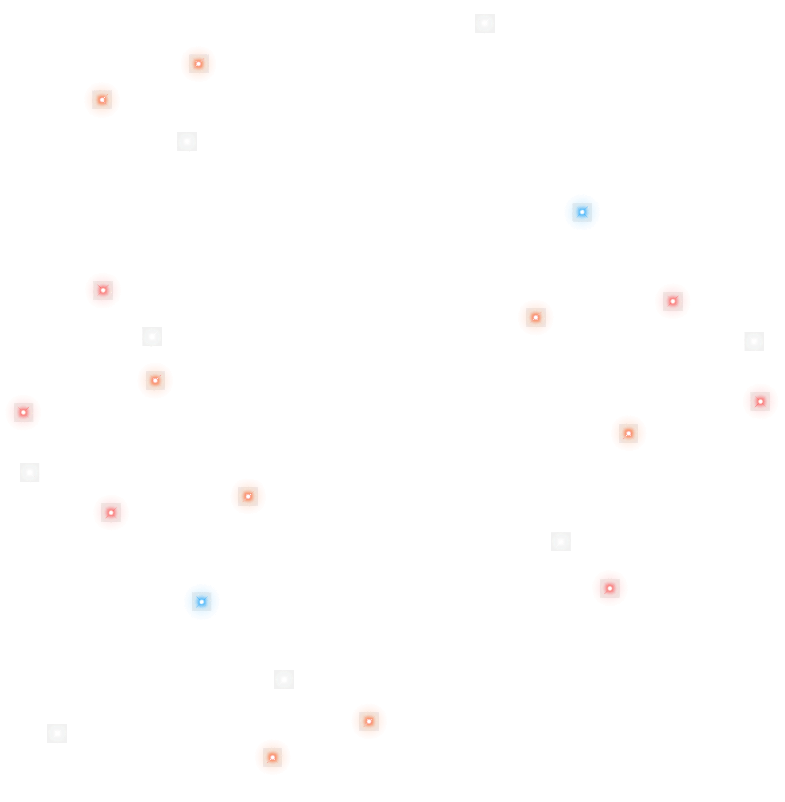

Hello Timothy Tan!
We wanted to say Thank you!





That's 1 day with DBS
127 times
Your peers stopped what they were doing to say thank you
Congratulations for Long Service Award
for the early calls, the late emails, and the small wins we truly appreciate.
Thank you Tim!
Write a letter to your future self!
Write a letter to the version of you who'll be celebrating 10 years with DBS. We will keep it safe, they'll read it.